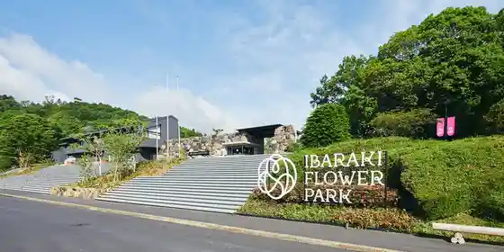
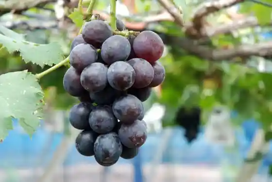
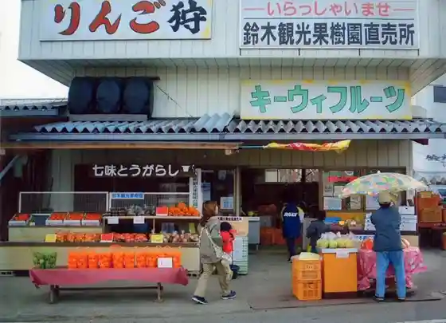

Ibaraki Furawa Park
Ishioka, Ibaraki · 0299-42-4111 · Official / source link

Dacho Okoku Ishioka Farm
Ishioka, Ibaraki · 0299-23-2245 · Official / source link
Imahashi Kanko Orchard
Ishioka, Ibaraki · 090-1049-7437 · Official / source link

Yasato Onsen Yuri no Sato
Ishioka, Ibaraki · 0299-42-4126 · Official / source link
Suzuki Kanko Orchard
Ishioka, Ibaraki · 0299-42-2930 · Official / source link

Gita Bunka Kan
Ishioka, Ibaraki · 0299-46-2457 · Official / source link
Okamoto Orchard
Ishioka, Ibaraki · 0299-42-3104 · Official / source link
Okano Farm
Ishioka, Ibaraki · 029-957-3233 · Official / source link
Hitachi Fudoki no Oka
Ishioka, Ibaraki · 0299-23-3888 · Official / source link
Uchida Kanko Orchard
Ishioka, Ibaraki · 0299-42-4100 · Official / source link
Yasato Kanko Kaju Kumiai
Ishioka, Ibaraki · 0299-43-1111 · Official / source link
Sakai Kanko Orchard
Ishioka, Ibaraki · 0299-42-2313 · Official / source link
Tochiku Nami Yutopia
Ishioka, Ibaraki · Official / source link
Ishioka Tsukubane Oto Campground
Ishioka, Ibaraki · 0299-42-2922 · Official / source link
Ea Park Coo
Ishioka, Ibaraki · 0299-44-1408 · Official / source link
Sanpo Sono
Ishioka, Ibaraki · 090-2659-9355 · Official / source link
Torattoria Aguresute (trattoria Agreste)
Ishioka, Ibaraki · 0299-56-6198 · Official / source link
Inaka no Aji Horoku Ya
Ishioka, Ibaraki · 0299-44-3471 · Official / source link
Takano Kanko Budo Sono
Ishioka, Ibaraki · 0299-42-3424 · Official / source link
Furutsu Park
Ishioka, Ibaraki · 0299-42-3937 · Official / source link
Honda Orchard
Ishioka, Ibaraki · 0299-46-3822 · Official / source link
Machi Kura Ai
Ishioka, Ibaraki · 0299-23-8723 · Official / source link
Middokuriikufisshingueria
Ishioka, Ibaraki · 0299-42-4600 · Official / source link
Yasato de toreta Magatto
Ishioka, Ibaraki · 0299-36-5031 · Official / source link
JA Yasato Kakioka Chokubai Tokoro
Ishioka, Ibaraki · 0299-44-8310 · Official / source link
JA Yasato (Sato no Shiki) Sonobe Chokubai Tokoro
Ishioka, Ibaraki · 0299-46-6479 · Official / source link
Honda Kaki Sono
Ishioka, Ibaraki · 0299-46-3825 · Official / source link
Ichigo Ie no Mu no Mu
Ishioka, Ibaraki · 0299-42-4126 · Official / source link
Igosaki Ichigo Sono
Ishioka, Ibaraki · 0299-42-3685 · Official / source link
Ishioka Fureai no Sato Himawari no Kan Aji Aji Tei
Ishioka, Ibaraki · 0299-35-5221 · Official / source link
Honda Engei
Ishioka, Ibaraki · 0299-46-3887 · Official / source link
JA Yasato Yasato Onsen Yuri no Sato Bussan Kan
Ishioka, Ibaraki · 0299-42-4126 · Official / source link
Naka Village Ichigo Sono
Ishioka, Ibaraki · 0299-42-3112 · Official / source link
Tarobe Orchard
Ishioka, Ibaraki · 090-7255-8583 · Official / source link
Ozeki Ichigo Sono (Ishioka)
Ishioka, Ibaraki · 0299-42-2885 · Official / source link
Maie Kaki Sono
Ishioka, Ibaraki · 0299-46-1922 · Official / source link
Tsuji Ichigo Sono
Ishioka, Ibaraki · 0299-42-3181 · Official / source link
Asahi Satoyama Gakko
Ishioka, Ibaraki · 0299-51-3117 · Official / source link
Soba Tokoro Ono Etsu
Ishioka, Ibaraki · 0299-24-4555 · Official / source link
Kashiwabara Ike Park
Ishioka, Ibaraki · 0299-23-1111 · Official / source link
Hitachi Kokubunji Ato
Ishioka, Ibaraki · 0299-43-1111 · Official / source link
Maru Saka Ichigo Sono (Kayabuki Minka)
Ishioka, Ibaraki · 0299-42-3330 · Official / source link
Iida Ya (Tsukudani)
Ishioka, Ibaraki · 0299-22-2557 · Official / source link
Jikasei Kona Teuchi Chi Chokozai
Ishioka, Ibaraki · 0299-27-1166 · Official / source link
Daikaku Tera
Ishioka, Ibaraki · 0299-43-2735 · Official / source link
Tsukuba Sono
Ishioka, Ibaraki · 0299-42-4003 · Official / source link
Tanaka Orchard (Ishioka)
Ishioka, Ibaraki · 0299-46-3829 · Official / source link
Koma Village Seimei Do (Senko Koma Village Michihiro)
Ishioka, Ibaraki · Official / source link
Ramen Gyoza Teishoku no Mise
Ishioka, Ibaraki · 0299-22-2382 · Official / source link
Marumi Shokudo
Ishioka, Ibaraki · 0299-43-0124 · Official / source link
Kappo Asahi Gatsu En
Ishioka, Ibaraki · 0299-46-0086 · Official / source link
Harada Ichigo Sono (Ishioka)
Ishioka, Ibaraki · 090-7837-9148 · Official / source link
Kisetsu Ryori
Ishioka, Ibaraki · 0299-42-4195 · Official / source link
Nippon Soba Kazunari Ishioka Mise
Ishioka, Ibaraki · 0299-22-5430 · Official / source link
Ibaraki Nyugyo
Ishioka, Ibaraki · 0299-26-8111 · Official / source link
Fuchu Yo
Ishioka, Ibaraki · 0299-23-0233 · Official / source link
Maruyo Ichigo Sono
Ishioka, Ibaraki · 0299-42-2048 · Official / source link
Terada Orchard
Ishioka, Ibaraki · 0299-42-3382 · Official / source link
Teuchi Soba Shoan
Ishioka, Ibaraki · 0299-43-3131 · Official / source link
Chugokuryori (Aji Hana)
Ishioka, Ibaraki · 0299-26-2188 · Official / source link
Kappo Hisashi Shi Cho
Ishioka, Ibaraki · 0299-23-0117 · Official / source link